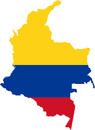

 La historia de Colombia hace referencia a los procesos que han marcado el devenir histórico de la actual
República de Colombia, un país americano ubicado al noroccidente de América del Sur, con una superficie
de 2 070 408 km² (1 141 748 km² corresponden a su territorio continental y los restantes 928 660 km² a
su extensión marítima) y una población de 50 372 424.1.
Las primeras expediciones de los conquistadores españoles en el territorio se llevaron a cabo
en el litoral Atlántico en 1499, aunque el proceso de colonización se inició solamente en 1509.2
Así entró en la región un nuevo factor que alteró el anterior panorama que se había venido
desarrollando entre los pueblos indígenas.
Con la llegada de los europeos al territorio de los
Muiscas se inició un proceso de conquista y sojuzgamiento.3 A medida que los españoles fueron
avanzando, construyeron varios asentamientos, dispusieron un nuevo ordenamiento del territorio
de acuerdo a los intereses de cada grupo conquistador.4 Dicho ordenamiento respondía a los recursos
que se encontraban en los asentamientos, proceso en el cual generalmente no se tuvo en cuenta la
opinión de los pueblos que habitaban allí.
Estos establecimientos continuaron en los siguientes
tres siglos con un proceso de expansión guerrera y colonizadora, introduciendo además una cantidad
considerable de población negra africana como mano de obra esclava, avanzando sobre las poblaciones
indígenas y de palenqueros que se vieron sometidos a periódicos desplazamientos.